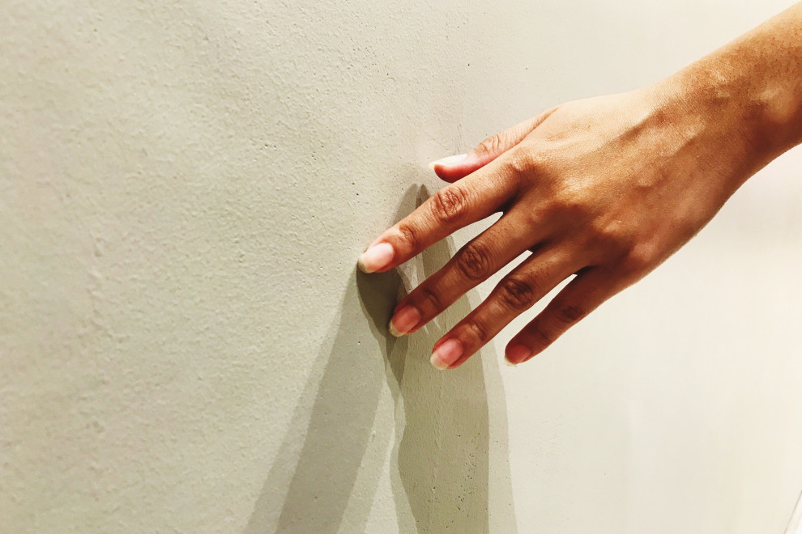

El sentido del tacto es aquel que permite a los organismos de percibir cualidades de los objetos y medios como la presión, temperatura, textura y dureza.
Los receptores avisan de un estímulo de dolor o de frío, el cerebro reacciona con una orden adecuada, ya sea apartarse de la causa del daño o comenzar a tiritar para subir la temperatura.
